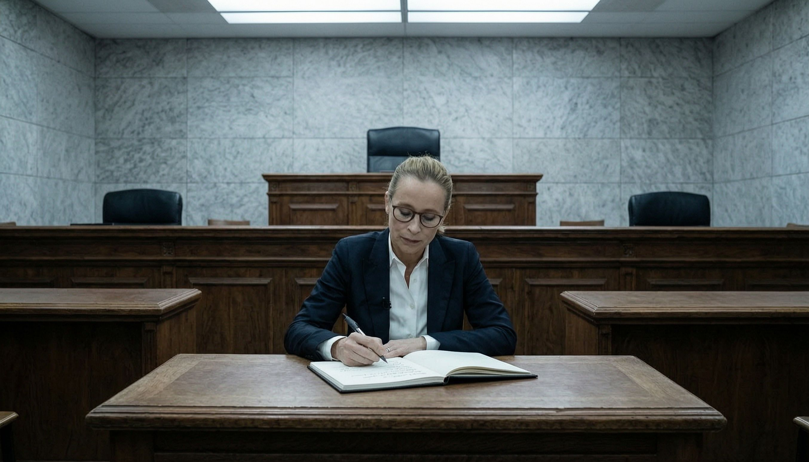

Wahl und Wahrheit

Eine Juristin, die es nicht ins Bundesverfassungsgericht geschafft hat, schreibt ein Buch über ihre gescheiterte Wahl. Sie nennt es „Wahl und Wahrheit“. Das Urteil steht im Titel.
Frauke Brosius-Gersdorf, Lehrstuhlinhaberin für Öffentliches Recht in Potsdam, war 2025 von der SPD für Karlsruhe vorgeschlagen worden. Die Union meldete Vorbehalte an, die Wahl wurde abgesagt, im August zog sie ihre Kandidatur zurück. Ihr Buch erscheint am 1. September bei Droemer Knaur.
Was darin steht, hat sie selbst angekündigt: Vorschläge, was sich ändern lasse, beim Verfahren der Richterwahl, in der Debattenkultur, im Umgang mit Frauen. Und in den Medien.
In einem Interview mit dem Redaktionsnetzwerk Deutschland wird sie konkreter. Ihr Scheitern schreibt sie einer Kampagne zu, die „von verschiedenen Seiten“ ausging. Von Abgeordneten erwartet sie, dass sie sich „sachlich informieren“ und nicht „nur aus neuen rechten Medien und sozialen Netzwerken“. Und: „Bestimmte neue rechte Medien haben Kampagnenmacht nur, weil manche Unionsabgeordnete sich fast ausschließlich dort informiert haben. Und das finde ich schade.“
Im Buch, so kündigt sie an, erkläre sie, warum sie bei neuen Medienformaten und Plattformen „Regulierungsbedarf“ sehe. Ein solcher Fall dürfe sich „nicht wiederholen“.
Halten wir die Kette fest. Eine Kandidatin für das höchste deutsche Gericht scheitert an Abgeordneten, die anders informiert waren, als sie es für richtig hält. Sie zieht daraus den Schluss, dass die Informationsquellen reguliert gehören.